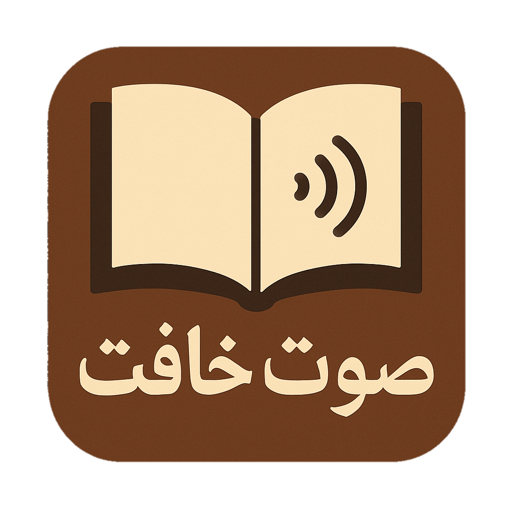

<!DOCTYPE html><html><head></head><style>@font-face{font-family:'meryem';src:url(./font/Noto_Kufi_Arabic/NotoKufiArabic-VariableFont_wght.ttf)}*{font-family:'meryem';margin:0;padding:0;transition:350ms}footer{color:#fff;position:relative;overflow:hidden;padding-top:80px;animation:fedlen 700ms both;transform:translateY(-20px);background:linear-gradient(90deg,#0d4b3a 0%,#07281e 100%);opacity:0}.footer-container{display:grid;grid-template-columns:repeat(auto-fit,minmax(250px,1fr));gap:2rem;max-width:1200px;margin:0 auto;padding:0 2rem;position:relative;z-index:2}.footer-title{display:flex;align-items:center;gap:10px;font-size:1.5rem;margin-bottom:1rem}.footer-links-title{font-size:1.2rem;margin-bottom:1.5rem;position:relative;padding-bottom:.5rem}.footer-links{list-style:none}.footer-links li{margin-bottom:.8rem}.footer-links a{color:#fff;text-decoration:none;display:flex;align-items:center;gap:10px;transition:0.3s;opacity:.8}.footer-links a:hover{opacity:1}.footer-bottom{text-align:center;padding:1.5rem;margin-top:3rem;border-top:1px solid #ffffff1a;position:relative;z-index:2}.footer-bottom p{opacity:.7;font-size:.9rem}.footer-bottom span{color:#1db954;font-weight:700}@media (max-width:767px){.pc{display:none}.container{grid-template-columns:auto}.footer-container{grid-template-columns:100}}a{color:#fff;text-decoration:none;padding:.5rem;border-radius:.3rem}a:hover{text-shadow:0 0 2rem #000;background:#0000001d;transform:translateX(5px)}@keyframes fedlen{to{opacity:1;transform:initial}}</style><body dir="rtl"><footer><div class="footer-container"><!-- قسم معلومات الرواية --><div class="footer-section"><h3 class="footer-title">صوت خافت</h3><p class="footer-desc">رواية كُتبت بشغف حول الموضوع الذي كان، وما يزال، وسيظلّ المؤثر الأول في نفوسنا.</p></div><!-- روابط سريعة --><div class="footer-section"><h3 class="footer-links-title">استكشف الموقع</h3><ul class="footer-links"><li><a href="about-riwaya.html"><span>📖</span>حول الرواية</a></li><li><a href="iktibasat.html"><span>👤</span>الاقتباسات</a></li><li><a href="about-me.html"><span>🖋️</span>الكاتب</a></li></ul></div><div class="footer-section"><h3 class="footer-links-title">تواصل معنا</h3><div class="contact-info"><p>ismail.boussyabom8@gmail.com</p></div></div></div><div class="footer-bottom"><p>تم التطوير بواسطة<span>إسماعيل بوصي</span>&copy;<span id="year">2025</span></p></div></footer></body></html>